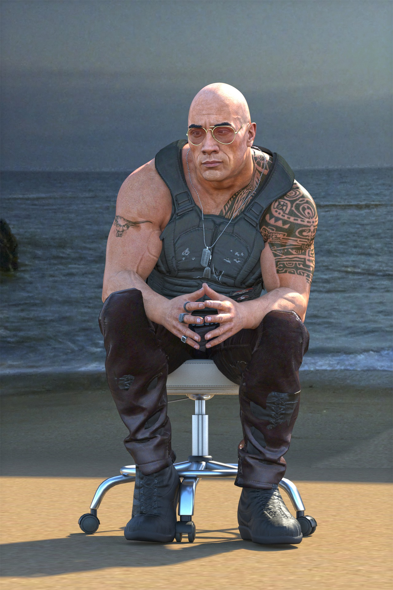

Actor and filmmaker

Dwayne Johnson posing for a photo
Here's a timeline of Dwayne Johnson's life:
- 1972 ‐ Born in Hayward City
- 1991 ‐ Championship Victory with the University of Miami
- 1995 ‐ Plays Canadian Football
- 1996 ‐ Makes his WWE debut
- 1997 ‐ Marries Dany Garcia & joins the Nation of Domination
- 1998 ‐ Won the WWF Championship
- 2000 ‐ Wins the Royal Rumble
- 2022 ‐ Starred in his first movie
Scorpion King
- 2003 ‐ Leaves the WWE
- 2006 ‐ Launched the Dwayne Johnson Rock Foundation
- 2011 ‐ Appears on WrestleMania XXVII
- 2013 ‐ Plays a role in Fast and Furious 6
- 2016 ‐ Launches his YouTube channel and partners with Under Armour
- 2019 ‐ Announces Bodybuidling show
- 2022 ‐ Participates in Super bowl LVI